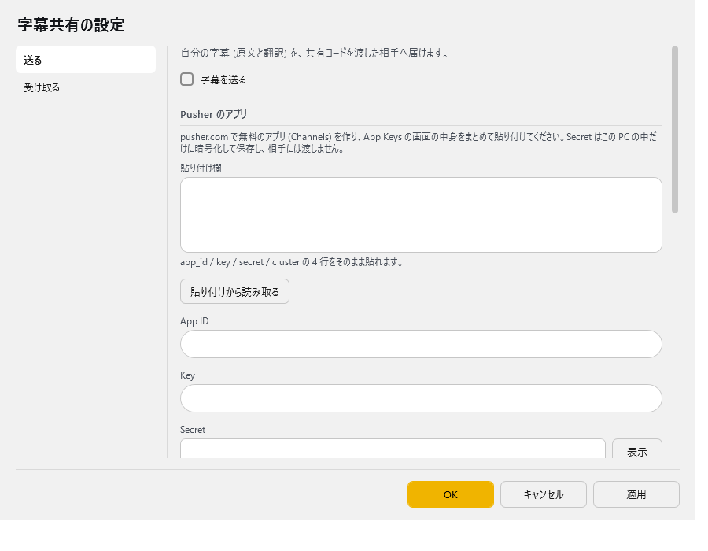
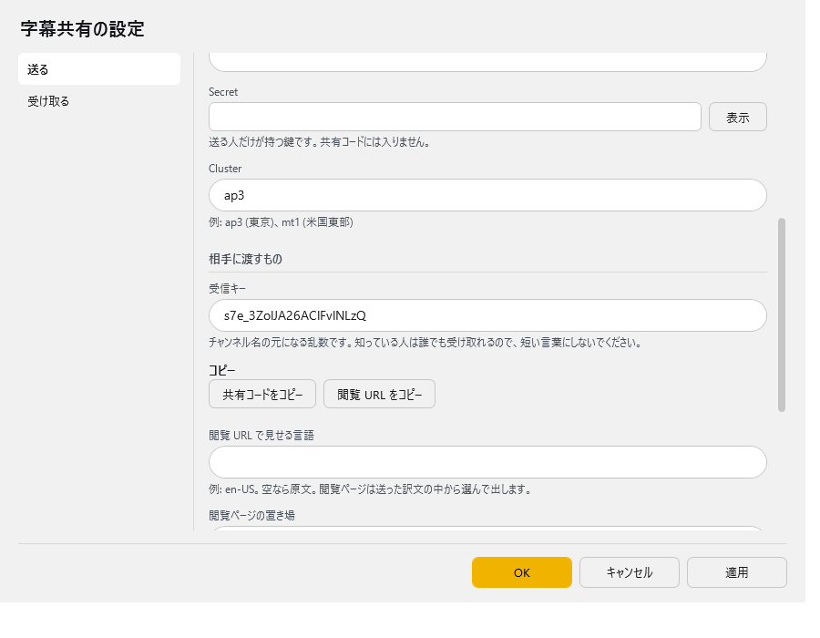
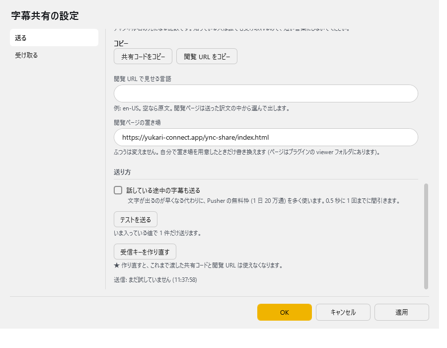
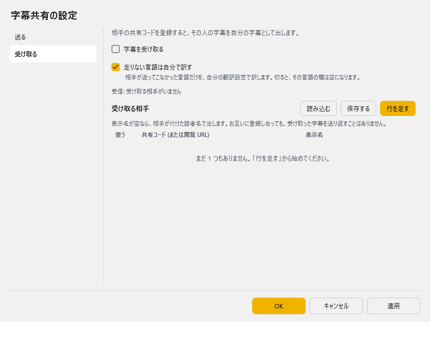

字幕共有
ゆかコネNEO v3.0 のドキュメントです。このプラグインは v3.0 で新しく入ったもの（ゆかコネNEO v3.0.0 beta 24 から、プラグインの版は v1.0）で、v2.3 にはありません。v2.3 との違いは v2.3 から v3.0 への移行 をご覧ください。
前提条件
- 送る人だけ、Pusher のアカウントと、Channels のアプリ 1 つ（無料の Sandbox で足ります）が要ります
- 受け取る人は、Pusher の登録も設定も要りません
このプラグインで出来ること¶
- 自分の字幕（原文・翻訳・話者名）を、共有コードを渡した相手へリアルタイムに届けられます
- 相手の字幕を受け取って、自分の字幕と同じように表示・読み上げできます。受け取る相手（共有コード）は複数登録できます
- 相手が送ってこなかった言語だけを、受け取る側の翻訳設定で訳して埋められます
- ゆかコネNEO を使っていない相手には 閲覧 URL を渡せば、ブラウザや OBS のブラウザソースで字幕を見てもらえます（
lang=で言語、name=1で話者名） - お互いに共有コードを登録し合えば、輪になって話せます。受け取った字幕は送り返さないので、字幕が回り続けることはありません
しくみ
中継には Pusher の Channels を使います。自分でサーバーを用意する必要はありません。 送る人が自分の Secret で署名して字幕を送り、受け取る人は公開チャンネルを購読するだけです。 チャンネル名は「受信キー」から作られ、共有コードや閲覧 URL の中に入っています。
共有コード（閲覧 URL）を知っている人は、誰でも字幕を読めます
チャンネルは公開です。公開したくない会話では、渡す相手を選んでください。 もし広まってしまったら、「受信キーを作り直す」で、それまでに渡したコードと URL を使えなくできます。
準備（送る人だけ）¶
- pusher.com でアカウントを作り、Channels のアプリを 1 つ作ります。
- アプリの App Keys の画面を開きます。
app_id/key/secret/clusterの 4 つが並んでいます。 - この画面の中身をまとめてコピーしておきます（あとで設定画面の「貼り付け欄」に貼ります）。
Secret の扱い
Secret はこの PC の中だけに、Windows の DPAPI で暗号化して別のファイルに保存します。 設定ファイルにも、共有コードにも、閲覧 URL にも入りません。 相手に渡るのは Key と Cluster とチャンネル名だけです。 暗号化はこの Windows ユーザーに結び付いているので、設定を別の PC や別のユーザーへ持って行ったときは、Secret だけ入れ直してください。
Pusher の無料枠の目安
無料の Sandbox は 1 日 20 万通・同時接続 100 までです。送った 1 通に加えて、受け取った先 1 か所ごとに 1 通と数えます。
- 既定では、確定した字幕だけを送ります。5 秒に 1 回話し続けると 1 時間に約 720 回送り、受け手が 3 か所なら 1 時間で約 2,900 通です
- 「話している途中の字幕も送る」を入れると途中経過も送るため、数倍に増えます。途中経過は 0.5 秒に 1 回までに間引きます
全員が送り合う「グループモード」はありません
全員が同じ Pusher アプリで送るには、Secret を全員に配ることになるためです。 輪になって話したいときは、それぞれが自分の Pusher アプリで送り、お互いの共有コードを登録し合ってください。
有効化¶
プラグイン一覧で 字幕共有プラグイン の「プラグインを使う」チェックを ON にしてください。手順は プラグインの有効化 をご覧ください。
設定¶
プラグイン一覧で、このプラグインの名前の右にある 「設定」 を押すと開きます。 画面は 2 ページに分かれていて、左の一覧で切り替えます（送る／受け取る）。
閉じるときの 3 択
設定は下書きとして持たれ、「OK」か「適用」を押すまで動いているプラグインには効きません。 変更したまま閉じようとすると「変更が保存されていません」と聞かれ、［はい］保存して閉じる／［いいえ］破棄して閉じる／［キャンセル］閉じるのをやめる から選べます。
送る¶
自分の字幕 (原文と翻訳) を、共有コードを渡した相手へ届けます。

| 項目 | 説明 |
|---|---|
| ☑ 字幕を送る | 入れると、自分の字幕を送ります。（既定：OFF） |
Pusher のアプリ
pusher.com で作った無料のアプリ (Channels) の値を入れます。App Keys の画面の中身をまとめて貼り付けるのが簡単です。
| 項目 | 説明 |
|---|---|
| 貼り付け欄 | App Keys の画面の中身をそのまま貼ります。app_id / key / secret / cluster の 4 行をそのまま貼れます。 |
| 「貼り付けから読み取る」ボタン | 貼り付け欄から App ID・Key・Secret・Cluster を読み取って、下の欄に入れます。読み取ったら貼り付け欄は空になります（Secret が入っているため）。OK で保存します。 |
| App ID | Pusher のアプリの app_id。 |
| Key | Pusher のアプリの key。共有コードに入り、相手に渡ります。 |
| Secret | 送る人だけが持つ鍵です。共有コードには入りません。右の「表示」で中身を見られます。英数字以外が混ざっていると保存しません。 |
| Cluster | 例: ap3 (東京)、mt1 (米国東部)。（既定：「ap3」） |

相手に渡すもの
| 項目 | 説明 |
|---|---|
| 受信キー | チャンネル名の元になる乱数です。初めて開いたときに自動で作られます。知っている人は誰でも受け取れるので、短い言葉にしないでください。 |
| 「共有コードをコピー」ボタン | YNC_Neo（ゆかコネNEO）を使う相手に渡すコードをクリップボードへコピーします。Key と Cluster が入っていないとコピーできません。 |
| 「閲覧 URL をコピー」ボタン | ブラウザや OBS で見る相手に渡す URL をクリップボードへコピーします。 |
| 閲覧 URL で見せる言語 | 例: en-US。空なら原文。閲覧ページは送った訳文の中から選んで出します。（閲覧 URL に lang= として付きます） |
| 閲覧ページの置き場 | ふつうは変えません。自分で置き場を用意したときだけ書き換えます (ページはプラグインの viewer フォルダにあります)。（既定：「https://yukari-connect.app/ync-share/index.html」） |

送り方
| 項目 | 説明 |
|---|---|
| ☑ 話している途中の字幕も送る | 文字が出るのが早くなる代わりに、Pusher の無料枠 (1 日 20 万通) を多く使います。0.5 秒に 1 回までに間引きます。（既定：OFF） |
| 「テストを送る」ボタン | いま入っている値で 1 件だけ送ります（まだ OK を押していない値でも試せます）。「送れました。○ か所で受け取っています。」のように結果が出ます。 |
| 「受信キーを作り直す」ボタン | ★ 作り直すと、これまで渡した共有コードと閲覧 URL は使えなくなります。OK で保存したあと、共有コードと閲覧 URL を配り直してください。 |
いちばん下の行には、送信の様子（「送信: OK 受け手 2 (12:34:56)」や「送信: まだ試していません」など）が出ます。
受け取る¶
相手の共有コードを登録すると、その人の字幕を自分の字幕として出します。

| 項目 | 説明 |
|---|---|
| ☑ 字幕を受け取る | 入れると、下の表の相手の字幕を受け取ります。（既定：OFF） |
| ☑ 足りない言語は自分で訳す | 相手が送ってこなかった言語だけを、自分の翻訳設定で訳します。切ると、その言語の欄は空になります。（既定：ON） |
その下の行には、受信の様子（「受信: 受け取る相手がいません」など）が出ます。
受け取る相手（表）
列：使う／共有コード (または閲覧 URL)／表示名
表示名が空なら、相手が付けた話者名で出します。お互いに登録し合っても、受け取った字幕を送り返すことはありません。「共有コード」の欄には、閲覧 URL をそのまま貼っても読み取れます。「使う」を切った行は受け取りません。
表の右上の 「行を足す」 で行を増やします。行の右端のボタンは ▲▼＝1 つ上へ／下へ、＋＝この下に足す、×＝この行を消す です。「保存する」 はいまの中身を CSV へ書き出します（控え用）。「読み込む」 は CSV から読み込んで、いまの中身と入れ替えます。
使うとき¶
送る側¶
- 準備 のとおり、Pusher のアプリを作って App Keys の画面の中身をコピーします。
- 設定の「送る」ページで、貼り付け欄 に貼って 「貼り付けから読み取る」 を押します。
- ☑ 字幕を送る を入れます。
- 「テストを送る」 を押すと、届くか確かめられます（OK を押す前の値でも試せます）。
- OK を押して保存し、相手に渡します。
- ゆかコネNEO を使う相手には 「共有コードをコピー」 で取ったコード
- ブラウザや OBS で見る相手には 「閲覧 URL をコピー」 で取った URL（「閲覧 URL で見せる言語」に
en-USなどを入れておくと、その訳文で出ます）
送るのは、翻訳が終わったあとの確定した字幕です（原文と、翻訳 1〜4 の訳文と、話者名）。 このプラグインが受け取った相手の字幕は送りません。
受け取る側（ゆかコネNEO）¶
- 設定の「受け取る」ページの表で 「行を足す」 を押し、もらった共有コード（閲覧 URL でも可）を貼ります。必要なら表示名も入れます。
- ☑ 字幕を受け取る を入れて OK を押します。
受け取った字幕は、自分の字幕と同じように表示・読み上げされます。相手（送り手）ごとに話者の色が分かれます。
- 母国語と翻訳 1〜4 の欄には、相手が送ってきた訳文のうち、自分の設定と同じ言語をそのまま使います（
enとen-USのような書き方の違いは同じ言語とみなします。中国語は簡体字と繁体字を分けます） - 相手が送ってこなかった言語だけを、自分の翻訳設定で訳します（「足りない言語は自分で訳す」が ON のとき）
- 相手の言語が自分の母国語と違うときは、母国語の欄（と読み上げ）にも自分の母国語にしたものが出ます
- 自分が送っているチャンネルの共有コードを登録しても、自分の字幕が二重に出ることはありません
お互いに登録し合っても回り続けません
受け取って出した字幕には目印が付いていて、「送る」側はそれを送りません。 A さんと B さんがお互いの共有コードを登録しても、字幕が行ったり来たりすることはありません。
閲覧ページ（ブラウザ・OBS）¶
「閲覧 URL をコピー」で取った URL を、ブラウザで開くか、OBS のブラウザソースに貼ります。
- 背景は透過です。ブラウザで直接開くと真っ白に見えますが、それで正しい動きです。確かめたいときは
&bg=222などを付けます - 話している途中の行は、確定するまで消えません
URL の後ろに &名前=値 を付けると、見せ方を変えられます。
| 引数 | 意味 |
|---|---|
lang |
出す言語（例 lang=en-US）。送り手の訳文から選び、無ければ原文。既定：原文 |
name |
1 で話者名を行の頭に出す。既定：出さない |
sec |
1 行が消えるまでの秒数。既定：5 |
maxline |
同時に出す最大行数。既定：10 |
style |
文字の見た目。normal（既定）／shadow／glow／neon／outline／bevel／engrave／gradient／depth／reflection |
effect |
行が出てくるときの動き。normal（既定）／fade／slideup／drop／slidein／pop／zoom／flip／blur／shake／wipe／type |
plate |
行の下に敷く座布団の色と濃さ。既定は黒の 45%（reflection だけ既定で無し）。plate=0 で無し、plate=70 で濃さ、plate=001a33 で色 |
demo |
見本の行を出す。style を見比べるとき用（demo=1／demo=好きな文字／demo=0 で無し） |
bg |
地の色。確認用（例 bg=222／bg=black） |
status |
1 で接続の様子を隅に出す。配信画面に映るので既定は出さない |
lang を送り手が送っていない言語にすると、原文が出ます。閲覧ページ側では翻訳しません。
困ったとき¶
「テストを送る」の結果や、「送る」ページのいちばん下の行に理由が出ます。
| 出る文言 | 確かめること |
|---|---|
| App ID・Key・Cluster・Secret・受信キーをすべて入れてください。 | 空の欄がないか。 |
| Pusher に断られました。App Key と Secret、それと PC の時計を確かめてください。 | Key と Secret の写し間違い。PC の時計が大きくずれていないか。 |
| App ID が違うようです。 | App ID の写し間違い。 |
| Pusher のアプリが使える状態ではありません (上限を超えているかもしれません)。 | Pusher の管理画面で、アプリの状態と無料枠の使用量を確認します。 |
| Pusher の受け付け上限に達しました。 | 送る量が多すぎます。「話している途中の字幕も送る」を切ると減ります。 |
| 送れました。ただし、まだ誰も受け取っていません。 | 送信はできています。相手が共有コードを登録して「字幕を受け取る」を入れているか、閲覧ページを開いているかを確かめます。 |
そのほか
- 受信キーを作り直したあとは、相手に新しい共有コード・閲覧 URL を渡し直してください。古いものでは受け取れません
- 閲覧ページに
status=1を付けると、接続の様子（「接続しました」「送信元から ○ 秒 応答がありません」など）が隅に出ます - 受け取った字幕の読み上げだけを止める設定は、まだありません